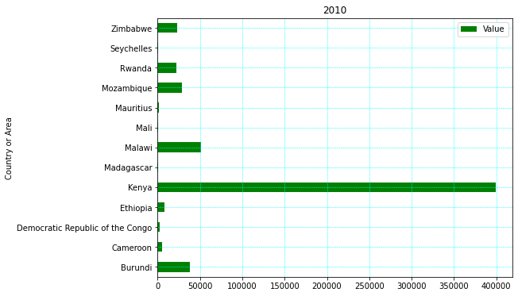
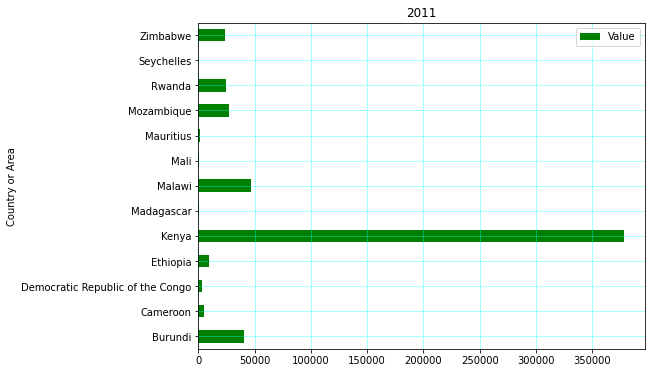
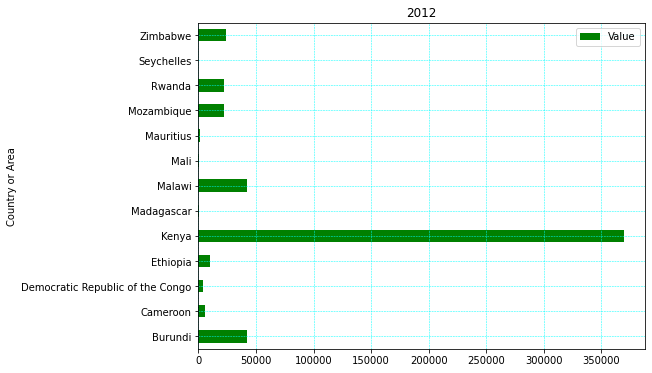
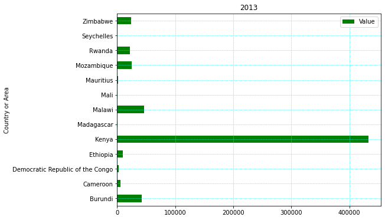
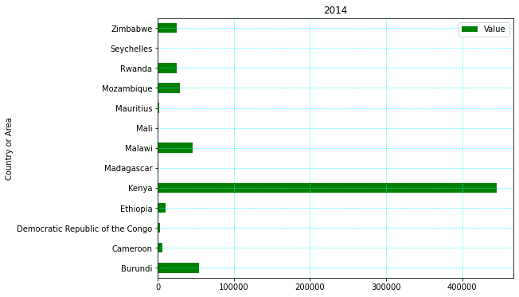
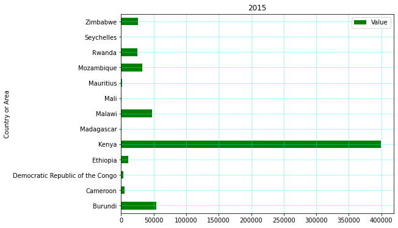
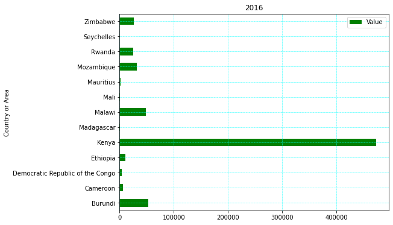
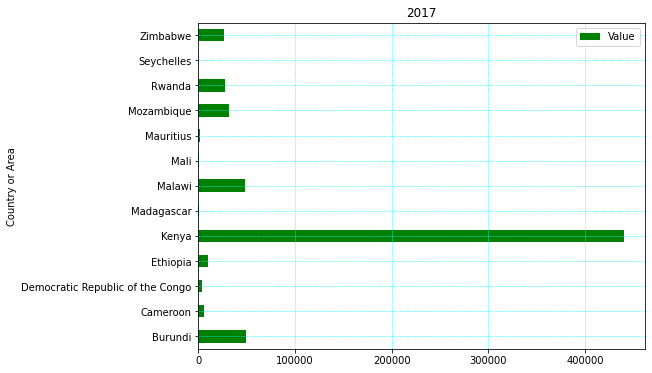
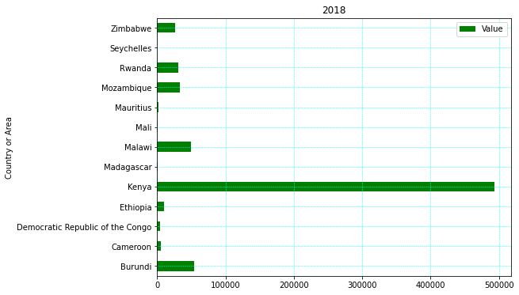

This Bar plots below show the Tea Production In Africa from the year 2010-2018









This Bar plots below show the Tea Production In Africa from the year 2010-2018
The line graphs show below the different measures of dispersion(as indicated by the legend), for the observation values in the line graphs above the first plot being the Mean,followed by the Standard Deviation,Median,Max,Variance and Interquatile Range.
We can also decide to visualize the median and interquartile ranges with the help of a boxplot. The diagram below helps us understand its structure.